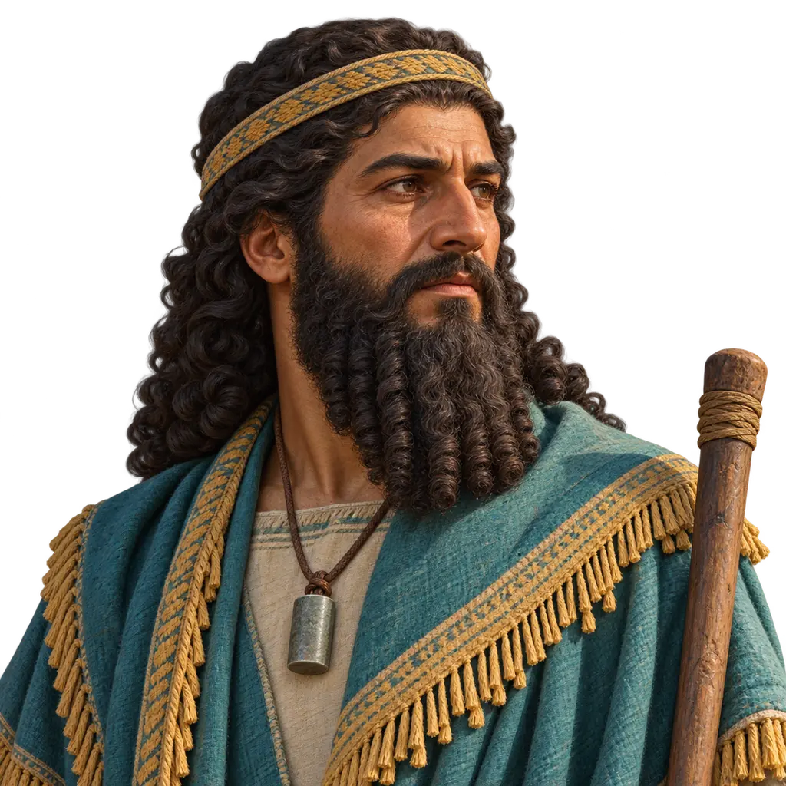
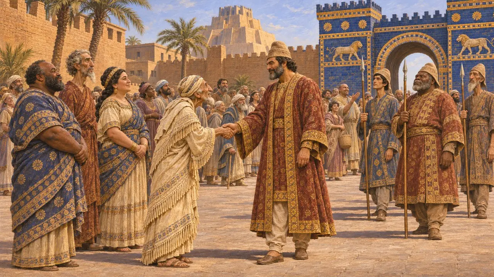
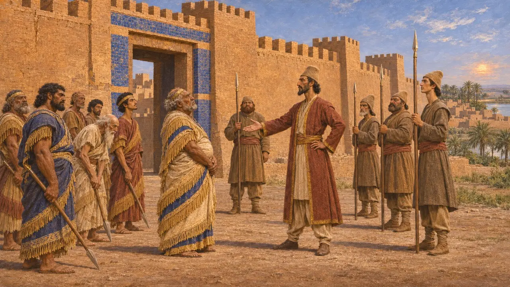
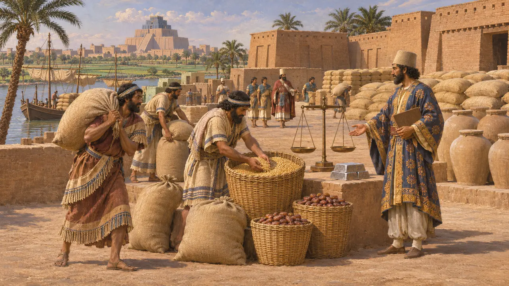
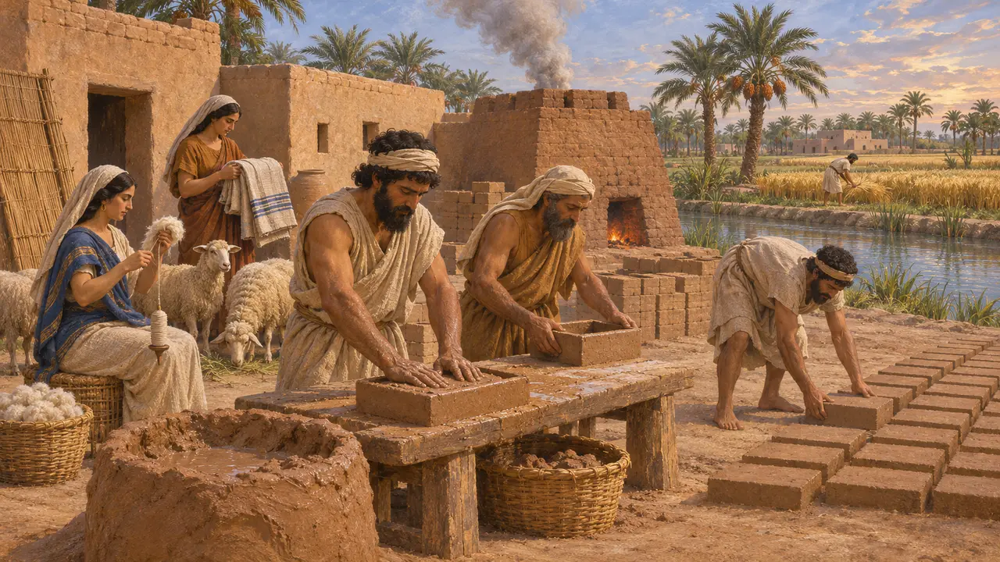
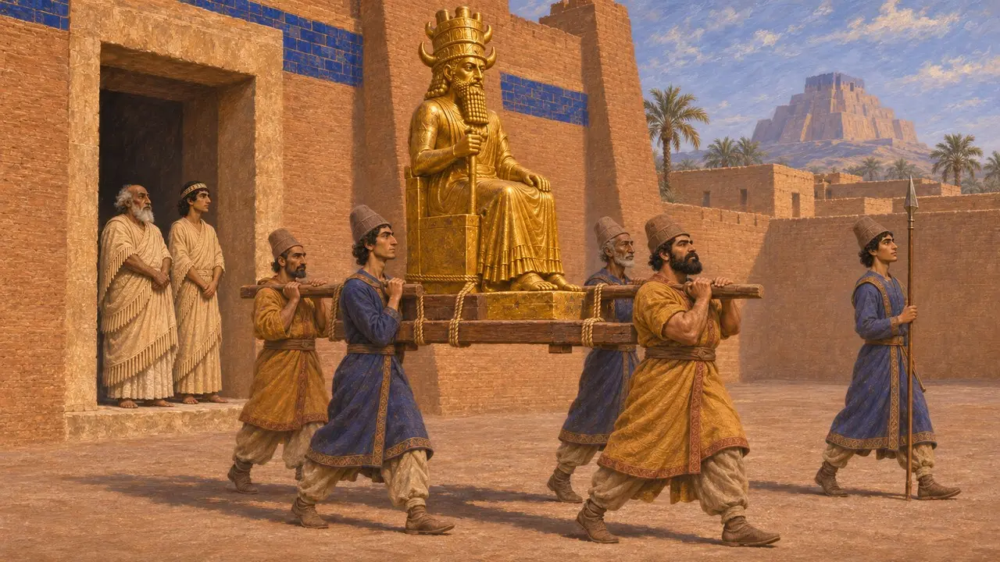
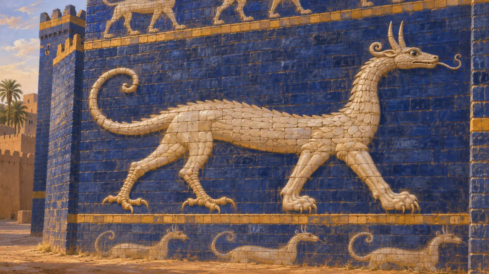

I Babilonesi
Popolo del basso corso del Tigri e dell'Eufrate, sotto il dominio persiano dal 539 a.C.
Nel gioco: Livello 1: La tomba del fondatore, Livello 3: La Menzogna, Livello 4: La Terrazza, Livello 5: La Carta
I Babilonesi vivevano nella pianura irrigata del basso Tigri e dell'Eufrate, la terra agricola più ricca dell'impero. Ciro prese Babilonia nel 539 a.C., e la regione divenne una provincia persiana che inviava orzo, datteri, lana e argento al Re e alla sua corte. Si ribellò due volte a Dario nel 522-521 a.C. e di nuovo a Serse intorno al 484 a.C.
Nel gioco: Il gioco mostra i Babilonesi come partner commerciale che fornisce orzo e stoffe tessute. Entrambi erano prodotti fondamentali di Babilonia, ma dopo il 539 a.C. la Babilonide era una provincia persiana soggetta a tributo, non un partner commerciale esterno.

Ciro entra a Babilonia
Nelle fontiLa Cronaca di Nabonedo registra che nel 539 a.C. Ciro sconfisse l'esercito babilonese a Opi e che le sue truppe entrarono poi a Babilonia senza combattere. Il re Nabonedo fu catturato. Il Cilindro di Ciro, redatto in cuneiforme babilonese per il nuovo sovrano, presenta Ciro come il re scelto dal dio Marduk per ristabilire il culto legittimo. È propaganda regia, ma mostra Ciro che governa attraverso le tradizioni babilonesi.
Nabonidus Chronicle; Cyrus Cylinder

Due rivolte contro Dario
Nelle fontiL'iscrizione di Behistun di Dario narra che nel 522 a.C. un babilonese di nome Nidintu-Bel si proclamò Nabucodonosor, figlio di Nabonedo. Dario lo sconfisse sul Tigri e sull'Eufrate e prese Babilonia. Nel 521 a.C. Arakha, che Dario definisce armeno, avanzò la stessa pretesa e fu sconfitto dal generale di Dario Intaferne, quindi impalato a Babilonia. Tavolette babilonesi datate ai regni di entrambi i re ribelli confermano le rivolte.
DB §16-20; DB §49-51

La provincia più ricca
Racconto anticoErodoto afferma che Babilonia e il resto dell'Assiria versavano ogni anno al Re 1.000 talenti d'argento e 500 fanciulli destinati a servire come eunuchi. Afferma inoltre che la Babilonide nutriva il Re e il suo esercito per quattro mesi ogni dodici, provvedendo così a un terzo di quanto forniva l'Asia intera. Le sue cifre non si possono verificare con esattezza, ma mostrano che i Greci consideravano la Babilonide la terra più ricca dell'impero.
Herodotus 3.92; Herodotus 1.192

Campi, lana e mattoni
Nelle fontiGli archivi cuneiformi, come i testi della famiglia Egibi di Babilonia e i registri templari di Sippar e Uruk, rivelano un'economia vivace fatta di coltivazione di orzo e datteri, greggi di pecore e lavorazione su larga scala della lana e dei tessuti. Nobili e funzionari persiani possedevano tenute in Babilonide, e alla Corona erano dovute imposte e prestazioni di lavoro. La carta di fondazione di Dario da Susa indica i Babilonesi come gli uomini che modellarono e cossero i mattoni del palazzo.
Egibi archive; DSf; M. Jursa, Aspects of the Economic History of Babylonia, 2010

Rivolta sotto Serse
ContesoLe tavolette babilonesi nominano due re ribelli, Bel-shimanni e Shamash-eriba, intorno al 484 a.C. Molti archivi familiari e templari della Babilonide settentrionale si interrompono in questo periodo, e alcuni storici collegano il fatto a una punizione persiana. Erodoto afferma che Serse portò via una statua d'oro dal tempio di Bel, e Arriano che ne distrusse i templi, ma l'entità dei danni resta dibattuta.
C. Waerzeggers, The Babylonian revolts against Xerxes and the end of archives, 2003/2004; Herodotus 1.183; Arrian, Anabasis 7.17

L'emblema accanto al nome
Nelle fontiL'emblema di Babilonia nel gioco è il mushhushshu, il drago-serpente di Marduk, pallido su fondo azzurro mentre avanza lungo i mattoni smaltati della Porta di Ishtar, costruita intorno al 575 a.C. da Nabucodonosor II. La vanga di Marduk su un'asta era l'altro suo segno. Non esisteva alcuna bandiera nazionale: questo è un emblema ispirato al dio della città.
J. Black and A. Green, Gods, Demons and Symbols of Ancient Mesopotamia, 1992
Fonti
- Behistun inscription (DB)
- Nabonidus Chronicle
- Cyrus Cylinder
- Herodotus, Histories, books 1 and 3
- C. Waerzeggers, The Babylonian revolts against Xerxes and the end of archives, 2003/2004
- M. Jursa, Aspects of the Economic History of Babylonia, 2010